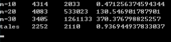

© 2019 《算法（第四版）》C# 题解 | Provided By 沈星繁
搜索解答
目前已完成到 2.5
3.1.37
上次更新：2019-03-10
发现了题解错误/代码缺陷/排版问题？请点这里：如何：提交反馈 。
题目
3.1.37
put/get 的比例。
当 FrequencyCounter 使用
BinarySearchST 在 100 万个长度为 M 个二进位的随机整数中统计每个值的出现频率时，
根据经验判断 BinarySearchST 中 put() 操作和 get() 操作的耗时比，
其中 M=10、20 和 30。再统计 tale.txt 并评估耗时比，并比较两次的结果。
解答
实验结果如下：

M=10 的时候随机的数字集中在 1024 到 2048 之间，重复值较多，因此 Put 耗时较少。
随着重复值的减少 Put 的耗时会大幅度提高，和实验结果显示的一样。
M=20 的时候数字在 1048576~2097152 之间随机，基本上没有重复值了。
M=30 的时候和 M=20 的情况类似，都是重复值几乎没有的情况。
随机数可以通过如下的方式产生：
result[i] = min + (long)(random.NextDouble() * (max - min));
代码
这里构造了 BinarySearchSTAnalysis 类，在类中声明了两个 Stopwatch 对象，
一个在 Put 方法的开始和结束部分进行计时，
另一个在 Get 方法的开始和结束部分进行计时。
static void Main(string[] args)
{
int n = 1000000;
int m = 10;
int addBy10 = 3;
for (int i = 0; i < addBy10; i++)
{
BinarySearchSTAnalysis<long, int> bst = new BinarySearchSTAnalysis<long, int>(n);
long[] data = SearchCompare.GetRandomArrayLong(n, (long)Math.Pow(2, m), (long)Math.Pow(2, m + 1));
FrequencyCounter.MostFrequentlyKey(bst, data);
Console.WriteLine("m=" + m + "\t" + bst.GetTimer.ElapsedMilliseconds + "\t" + bst.PutTimer.ElapsedMilliseconds + "\t" + bst.PutTimer.ElapsedMilliseconds / (double)bst.GetTimer.ElapsedMilliseconds);
m += 10;
}
BinarySearchSTAnalysis<string, int> st = new BinarySearchSTAnalysis<string, int>();
FrequencyCounter.MostFrequentlyWord("tale.txt", 0, st);
Console.WriteLine("tales\t" + st.GetTimer.ElapsedMilliseconds + "\t" + st.PutTimer.ElapsedMilliseconds + "\t" + st.PutTimer.ElapsedMilliseconds / (double)st.GetTimer.ElapsedMilliseconds);
Console.ReadLine();
}